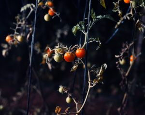
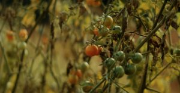

11
Tomatoes
“You think you know what is going to happen, but it's a surprise every time,” said farmer Sara, who heads the cultivation of La Granja’s tomato patch. “From very little plants, you prepare the field. You prepare the soil, then prepare the little houses for the tomatoes, hang all of them. It's a constant, constant work. And you can see the difference week by week."
“Everyone loves tomatoes. Everyone grows tomatoes,” says Andy, “but what I've chosen to do is grow some harder different varieties of heirloom tomatoes. The flavors of this one particular cherry tomato called Sungold, they're amazing. They out-flavor every tomato, so we grow the most of those.”
Sara heads the cultivation of La Granja’s tomato patch.
One of the most popular varieties of cherry tomatoes, Sungold tomatoes ripen early to a golden orange, ready to harvest throughout the summer. Sweeter and longer-lasting than other cherry tomato varieties, they can be harvested twice a week once they begin producing fruit.
"From a little stem alone, then you'll have five, ten, and there are too many," said Sara. "So you have to choose. It’s kind of a game. You try to predict the future. Between those 10, we leave five. You bet that this is going to happen and maybe it's not. It’s a little bit different every week.”
01


"When you start to harvest, this is obviously the top moment,” said Sara. “You can really be proud. I'm always so proud of what nature can give us with just a little bit of love and dedication. You really have to use your good vibes, use your love.”
02

In addition to potassium, vitamins B and E, tomatoes are packed with an antioxidant called lycopene, which helps protect them from the ultraviolet rays of the sun. In much the same way, it protects our cells, fighting off free radicals, cancer, heart disease and other forms of illness and degeneration.
03


Once the tomato plants get big enough, the farmers hang them on stakes, “because otherwise the plant can fall down and break. So even to keep the plant alive, it's a different job, but it's the same excitement," said Sara.
04


“They are a little bit particular,” confirmed farmer Oscar. “They don’t like too much water, so you have to be careful. And then we protect them with copper, because right now there is some fungi that attack them.”
05


“I think it's a really good exercise for our heart and our mind,” said Sara of vegetable cultivation. “And when you see these big amounts, it’s just amazing. And you can say, okay, we did it. Thanks to the nature. Thanks to the people. Thanks to everything. It's really satisfying."
06


"Even after the whole day under the sun harvesting hundreds of kilos of tomatoes, I'm feeling like I’m waking up full of energy,” Sara said. “I think that is something that everyone should do, even if you have a little pot on your window, it’s really something helpful, to reconnect, to be alive.“
07


Once the tomatoes are harvested, they are taken to the kitchen, where they become the centerpiece of another signature dish, a simple tomato salad that's part of every Farmer's Table at La Granja.
08


“They're amazing, so sweet and so different in color and taste. So we kind of give them an important role,“ said chef Eduardo.
09


Eduardo explained: “We take the overripe tomatoes and make a kind of tomato water with them, which we then combine with the tomatoes, some vinegar, salt, berries and basil leaves, to have this classic taste but in a different way.”
- 01
- 02
- 03
Avocado
- Originated in south-central Mexico
- May help to ward off cancer and inflammation and assist digestion and heart health
- Harvested from late spring to early fall
- 4-7 years seed to harvest
Chili
- Originated in Mexico
- May help promote weight loss and relieve pain
- Grown in summer
- 60-95 days seed to harvest
Carrot
- Originated in Persia
- Improves health of eyes, skin, hair, growth, and immune system
- Grown year round
- 60-80 days seed to harvest
- 04
- 05
- 06
Eggplant
- Originated in southern Asia
- Strengthens bones, reduces symptoms of anemia, improves cognition and cardiovascular health, protects the digestive system
- Grown in summer
- 100-150 days seed to harvest
Greens
- A great source of beneficial plant compounds like antioxidants and polyphenols
- Strengthens heart health, lowers risk for numerous chronic diseases
- Grown year round
- 2-3 weeks seed to harvest
Herbs
- Rich with unique antioxidants, organic compounds, essential oils, vitamins and phytosterols
- Antiseptic and anti-inflammatory properties
- Thought to strengthen immunity and reduce risk of various diseases
- 07
- 08
- 09
Green Bean
- Originated in Peru
- Contains vitamins A, C, K, folic acid and fiber
- Supports brain health, repairs cell damage and strengthens bones
- Grown in summer
- 50-55 days seed to harvest
Lavender
- Originated in the Mediterranean and Middle East
- Antiseptic, anti-inflammatory, can help heal minor burns and insect bites
- Grown in summer
- 14-21 days from seed to harvest
Pepper
- Originated in the Americas
- Improves eye health and reduces risk of cancer, anemia and heart disease
- Grown late spring to early fall
- 60-90 days seed to harvest
- 10
- 11
- 12
Strawberry
- Originated in the Americas
- Contributes to skin and hair health, reduces the risk of cardiovascular disease and stroke
- Grown in spring
- 5 months to a year or more seed to harvest
Tomatoes
- Originated in the South American Andes
- Improves heart and skin health, may prevent cancer and other diseases
- Grown late spring to summer
- 60-80 days or more seed to harvest
Watermelon
- Originated in Africa
- Improves heart and eye health, lowers inflammation, assists with digestion and hydration
- Grown in summer
- 80 days seed to harvest
Contact
FLUSSBAD
Zur Alten Flussbadeanstalt 1
10317 Berlin, Germany
10317 Berlin, Germany
Website by Studio Airport